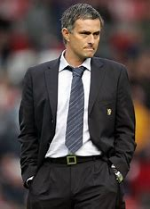
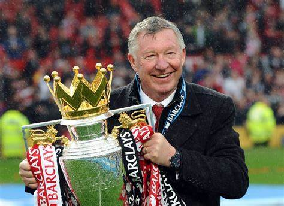

|  |
He is the best coach ever in football ,now he is coaching Roma after he coached Porto,Chelsea,Real
Madrid,Man
United,and the chicken club.
Wherever he went he achieved the success unless one team which is Tottenham. |
|  | He's my top 2 manager in football.Unfortunately I didn't watch a lot of games while he was at Man
United because
he's an old manager and he retired at 2013 when I almost started watching football. He has the most trophies in football with 49 trophies in almost 39 years of coaching. |
And the third one is: